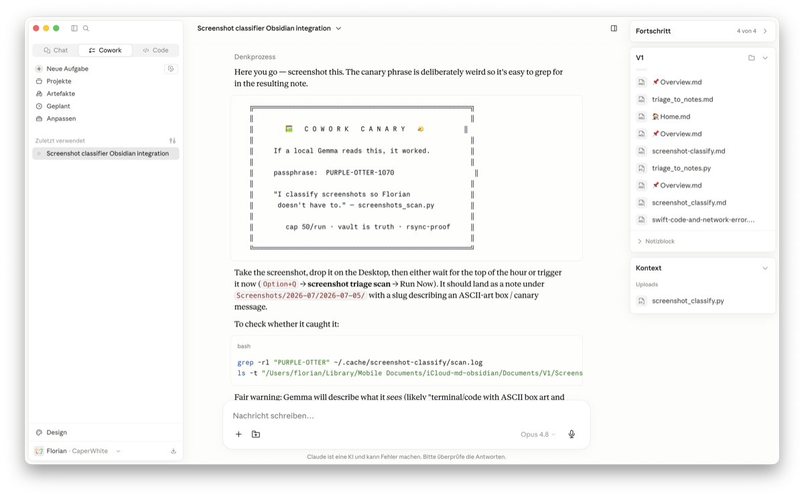
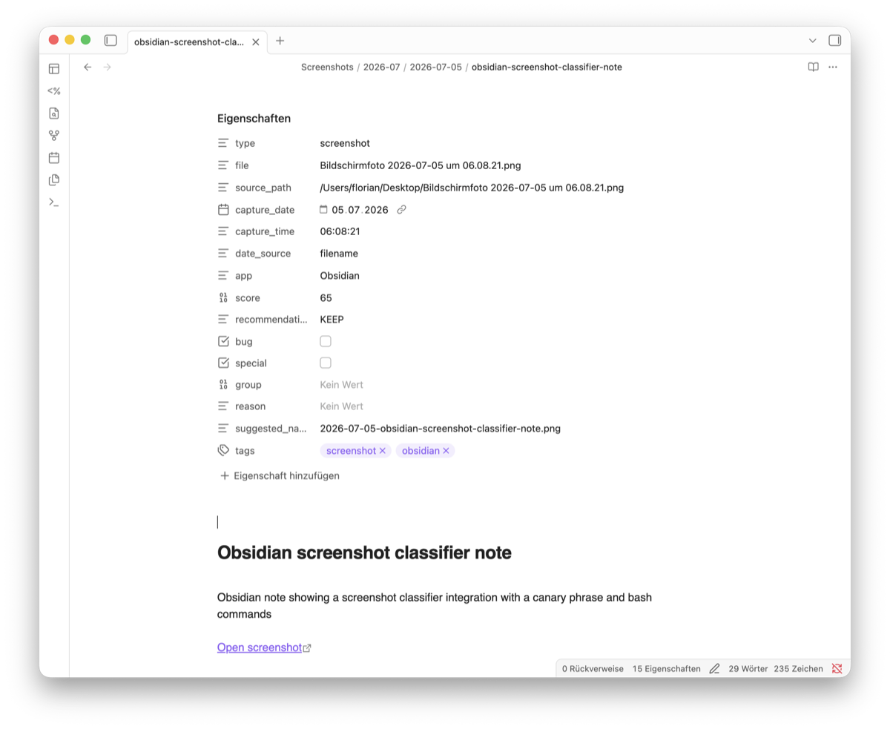

Little Gemma vs Big Desk
The Local AI saga: 1. Little Gemma vs Big Desk · 2. Three Different OCRs · 3. Friendly Competition
I handed a program running entirely on my laptop a screenshot of a garbled, obfuscated error message — the kind even I have to squint at — and it typed every character back to me, exactly. Then, on a whim, I asked it to sketch what the screen looked like in little text characters — ASCII art. It did that too, boxes and all.
No internet. No account. No bill. The whole thing fits in about six gigabytes of memory and answers in a second or two. That was the moment I knew I had to find something for it to do.
A confession
I am a screenshot hoarder. At last count I had 1,076 of them, most dumped straight onto my desktop — a graveyard of bug reports, receipts, half-remembered diagrams, and forty near-identical shots of the same error. I never go back and look. I just keep taking them, because deleting one means deciding, and deciding is work.
A program that can actually read an image changes that math. If something can look at each screenshot and tell me what it is, I could finally sort the graveyard.
What I was even hoping for
The thing doing the reading is Gemma 4 12B — Google's small, open model. The "12B" is roughly how big its brain is; what matters is that it's small enough to run entirely on my Mac, in about six gigabytes, with no cloud behind it. It's the same little model I have reading things for my voice assistant — light enough to live on a laptop, good enough to read a screen.
Honestly, I didn't know how far it would go. Reading text off an image is impressive but expected. What I wanted was harder: could it look at ten screenshots and tell me which ones are really the same thing photographed twice? That's judgment, not transcription. I genuinely didn't know if a model this size could do it.
No workflows were harmed
My first instinct was to reach for a cloud workflow — a way to fan a swarm of AI agents out across the pile and have them chew through it in parallel. I asked Fable, my AI coding partner, to help me build it that way.
Then it clicked: the parallelism I actually wanted wasn't a crowd of cloud agents. It was my local model, quietly working through images on my own machine. What I really needed was a boring, reproducible script with no cloud in the loop at all.
So it began as a fancy workflow experiment and ended as a plain script. No workflows were harmed in the making of it.
The fight
Getting there meant hitting a couple of walls.
The cloud-agent version hit a hard one first: the service pulls the plug on any unattended job after about 45 minutes, and reading the ~950 screenshots I had piled up at the time — a second or two each — sails right past that. The job simply couldn't finish in one sitting.
Fable's first fix was to cache the results to a file so we wouldn't redo work. Except it only wrote that file at the very end of a complete run — and the run never completed. So an interrupted job saved nothing. We'd made the failure more painful, not less.
The fix that stuck was to make it resumable: before each run, figure out which images are already done, process the next batch, and stop cleanly before the clock runs out. It took about an hour and a half, spread across runs, to grind through all 950. But it finished.
The morning redesign
The next morning I synced another hundred screenshots over from my other Mac, and rebuilt the thing properly.
Two changes. First, it now watches several folders, and I just write down which folders and which file types to look at. Second — the good one — we stopped keeping a separate "what's already done" file, because a separate file always drifts out of sync with reality. Instead, the notes it writes into my Obsidian vault are the record. Every note remembers the screenshot it came from; the ones with no note yet are the ones still to do.
Nothing to lose, nothing to desync. I can even move the entire screenshot library into its own vault and the thing still knows exactly where it left off.
The judgment, written down
The actual decision — is this worth keeping? — comes down to three questions I taught it to ask:
- Does it show a bug? A crash, an error, a broken screen — those are worth keeping.
- Is it hard to recreate? A receipt, a confirmation number, data I couldn't easily get back — keep it.
- Is it unique, or one of ten? If a folder has forty shots of the same thing, I need one, not forty.
Gemma scores each screenshot, flags the bugs and the hard-to-recreate ones, then groups the near-duplicates and nominates the best of each group. And one deliberate rule: it only ever recommends. It never deletes or renames a thing on its own. I wanted a librarian, not a shredder.
Now it just runs
By cloud standards, a second or two per image is glacial. For a model living on my laptop, it's fast — and it doesn't matter, because nobody's watching. The script wakes up on its own, notices the screenshots that don't have a note yet, reads them, and files them away. Unattended, offline, on my own machine.
To be sure the whole loop actually worked, I planted an easter egg. I asked Claude — in a Cowork session — to make a little visual card that Gemma could read: a canary. Here's the lovely part. Claude can't see images and can't draw one, so it did the only thing a text model can — it drew the picture out of characters. ASCII art: a visual aid built from pipes and dashes by a model that has no eyes, for a model whose whole talent is having them. The card read "If a local Gemma reads this, it worked," with a deliberately odd passphrase and a couple of bash commands tucked in. I dropped it on the desktop.

Gemma's job here isn't to obey what's on the screen or copy it out word for word — it's to look at the image and write an honest description of what it is. And that's exactly what came back: it filed the card as "a screenshot classifier integration with a canary phrase and bash commands." It had seen the card, understood what it was, and described it accurately — canary phrase, bash commands and all. The loop closed.

The everyday version is duller and more useful. That garbled error from the top of this story? Now a note, tagged as a bug, scored 85 out of 100. The forty near-identical shots of one dead end? Grouped — Gemma keeps the clearest and marks the rest "similar to" it. The pile collapses to the shots that matter.
So what
The useful AI didn't need a data centre. It fit in six gigabytes on my laptop, read a thousand of my screenshots a second or two at a time, and turned a junk drawer into something I can actually search — and not a single pixel of it left my machine.
That's the twist on the cheap-leverage story. Watering my tomatoes needed the cloud. This one was better because it didn't.